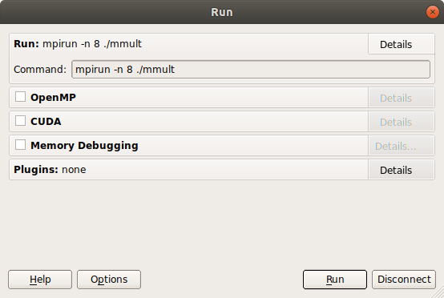
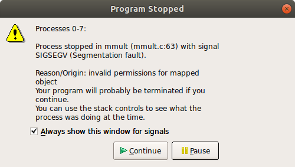

Fix the bug
This topic describes how to identify and fix the bug in each of the example source files with Arm® DDT.
Before you begin
- You must install all the necessary tools as described in Software requirements.
- You must complete the instructions in Compile and Run the Code.
Procedure
Recompile the application with the
-gdebugging flag.To make debugging simpler, Arm recommends that you compile without using compiler optimizations. To disable optimizations, add the
-O0option to theCFLAGSvariable. In the following examples, the options used on the command line by theMakefilecan be set insrc/make.def.CFLAGS = -O0 -g
Remove the initial executable with:
make clean
And recompile with:
make
Note
In Fortran, the compiler might display a warning. To display more information at runtime, compile using the "-fcheck=bounds" flag with GCC, or "-Mbounds" using the Arm Compiler for Linux.
Navigate to the
C,F90, orPydirectory containing the application for the version you want to debug.Debug the application with
ddt mpirunusing express launch. For example:ddt mpirun -n 8 ./mmult ddt mpirun -n 8 python ./mmult.py
If your MPI environment does not support express launch, run the
ddtcommand:ddt -n 8 ./mmult ddt -n 8 python ./mmult.py
Note
-n 8tells the debugger to debug using 8 processes. However, the application crashes at any scale.Arm DDT starts and displays the Run window. If you run the application on a remote system, ensure that you enable X forwarding. To learn more about using X forwarding with Arm Forge, see the Connecting to a remote system topic in the Arm Forge user guide.
This window displays the debugging session settings.
To continue, click Run.
This displays the main debugger window.

The interface displays the following:
- Section 1: Commands to play, pause or stop the application and select the processes or threads to inspect
- Section 2: Project source files
- Section 3: Source code view
- Section 4: Current line and program variables
- Section 5: Stack view and breakpoint, tracepoint, and watchpoint settings
- Section 6: Evaluate window for arbitrary expressions
Note
At this stage, the
CandF90versions display the source code of the application.If Arm DDT does not display the source code, recompile the source file and ensure that the
-gdebugging flag is included on the compile line. For complete instructions on how to compile the examples, see Compile and Run the Code.If you still experience a problem, contact Arm support.
For the
Pyversion, no source code displays when the debugger attaches. This is expected when running in the Python interpreter. The C or F90 source code of the kernel displays when the application crashes, if you compile the kernels with-g.To visualize where the application crashes, click Play (in the top-left corner):
The debugger stops where the application crashes.
Click Pause.
The source code viewer highlights the line of code where the crash occurs.
In C:
res += A[i*sz+k]*B[k*sz*j];
In F90:
res=A(k,i)*B(j,k+res)
This problem is caused by an error in the expression to compute the index of array B, and this results in an out of bound memory access. The bug can be fixed with:
In C:
res += A[i*sz+k]*B[k*sz+j];
In F90:
res=A(k,i)*B(j,k)+res
Note
To automatically detect an out of bound memory access with Arm DDT, select the Memory debugging box in the Run window. Navigate to memory debugging Details and enable Add guard pages to detect out of bound heap accesses.
For more information, see Memory debugging in the Arm Forge user guide.
Save the source file: select .
Recompile the source file: select .
By default, Build runs
makein the current directory.Note
To change the Build options, select Configure Build and set the configuration settings.
To run the executable with the fix, select .
You are prompted to restart the application. Click Yes.
Play the application in the debugger again.
The application runs without any issues until every process in the program has terminated, and outputs the following when running 8 processes:
0: Size of the matrices: 64x64 3: Receiving matrices... 6: Receiving matrices... 2: Receiving matrices... 4: Receiving matrices... 7: Receiving matrices... 1: Receiving matrices... 5: Receiving matrices... 0: Initializing matrices... 0: Sending matrices... 1: Processing... 2: Processing... 3: Processing... 4: Processing... 5: Processing... 6: Processing... 7: Processing... 0: Processing... 1: Sending result matrix... 3: Sending result matrix... 5: Sending result matrix... 7: Sending result matrix... 2: Sending result matrix... 4: Sending result matrix... 6: Sending result matrix... 0: Receiving result matrix... 0: Writing results... 0: Done.
When fixed, the application writes the results in the working directory to a file called
res_C.mat,res_F90.mat, orres_Py.mat(depending on the version you used). Ensure that your working directory is writable.Note
To run Arm DDT in non-interactive mode, use
ddt --offline mpirun:ddt --offline mpirun -n 8 ./mmult
The debugger runs in the background of the application and outputs a debugging report:
firefox mmult_8p_1n_YYYY-MM-DD_HH-MM.txt
YYY-MM-DD_HH-MM corresponds to a timestamp of the report creation date. For more information, see Offline debugging in the Arm Forge user guide.